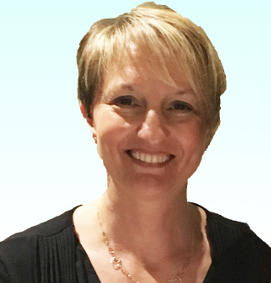

Equità
Dare il proprio contributo all’interno del Consiglio con dedizione nel più limpido spirito di servizio per la categoria, escludendo personalismi e qualunque tipo di interesse diretto o indiretto.
ingXing - ingegneri al quadrato
Rappresentiamo a 360 gradi il mondo dell’ingegneria torinese: a livello occupazionale (siamo dipendenti pubblici e privati, liberi professionisti, giovani, pensionati) e in termini di specializzazioni (strutture, prevenzione incendi, ambiente, energia e impianti, ICT, lavori pubblici, aerospaziale).
Desideriamo operare nel segno della continuità con il recente passato, proseguendo le iniziative intraprese per rafforzare il dialogo con le istituzioni, gli organi decisionali e con altri Ordini e Collegi professionali.

Dare il proprio contributo all’interno del Consiglio con dedizione nel più limpido spirito di servizio per la categoria, escludendo personalismi e qualunque tipo di interesse diretto o indiretto.
Non fare alcuna segnalazione per incarichi o similari che preveda una qualsiasi forma di remunerazione riferibili ai Consiglieri eletti direttamente o indirettamente, fatte salve le partecipazioni a Commissioni e similari che contemplino il mero rimborso spese.
Rafforzare la funzione di rappresentanza del Consiglio dell’Ordine nei confronti di tutta la categoria e di tutti gli iscritti all’Albo, interessandosi attivamente delle problematiche inerenti a ogni modalità di esercizio della professione (liberi professionisti, dipendenti pubblici e privati, docenti, ecc.) senza alcuna distinzione, favorendo la valorizzazione della figura dell’ingegnere in ogni ambito.
Migliorare l’offerta formativa nell’ambito dell’aggiornamento continuo e costante delle competenze, previsto dalle norme vigenti, cercando il più possibile di contenere i costi pur nel rispetto di un elevato standard qualitativo. A tale fine la FOIT sarà organizzata per essere sempre più il “braccio operativo” del Consiglio e delle Commissioni unicamente a servizio delle esigenze formative degli Iscritti.
Favorire, al fine di valorizzarne le competenze e nei limiti del possibile, l’assunzione di ruoli di rappresentanza esterna da parte di iscritti esperti in possesso di qualifiche e competenze particolarmente idonee a detti ruoli.


Instaurare, attraverso la nostra rappresentanza, un dialogo con la Cassa per una informazione più efficace.


